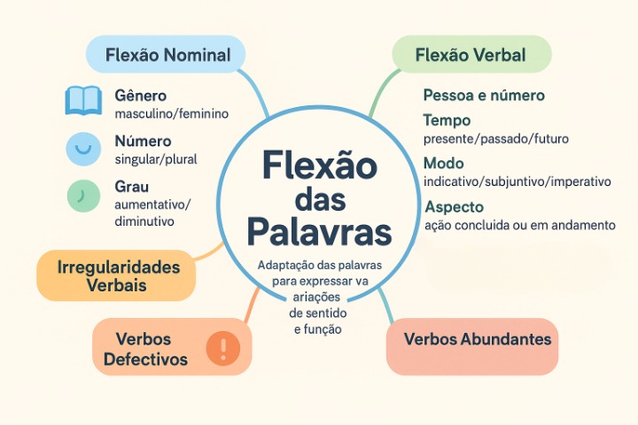

Flexão das Palavras: gênero, número, grau, tempo, modo, pessoa e aspecto
A capacidade de adaptação formal constitui um dos pilares da expressividade e da precisão da Língua Portuguesa. As palavras não permanecem congeladas em formas invariáveis quando entram em contato na cadeia da fala e da escrita; pelo contrário, modificam sua terminação externa para se articularem sintaticamente, responderem às exigências de concordância e transmitirem com exatidão dados como tempo cronológico, intenção modal, número de indivíduos e relações de sexo ou gênero social.
Esse fenômeno morfológico sistemático é denominado flexão. Enquanto os processos derivacionais criam novos vocábulos e enriquecem o vocabulário, a flexão gera variantes de uma mesma palavra — os chamados paradigmas flexivos —, garantindo a coesão gramatical interna da oração e evitando ambiguidades na referência discursiva.
Neste artigo completo, você explorará a fundamentação teórica da flexão na morfologia contemporânea, a distinção cardeal entre flexão nominal (gênero, número e grau) e flexão verbal (pessoa, número, tempo, modo, voz e aspecto), as particularidades dos verbos irregulares, defectivos e abundantes, com quadros sinópticos e questões resolvidas para estudo e fixação.

O que é a Flexão Morfológica?
Do ponto de vista científico da morfologia, a flexão é a variação sistemática que uma base lexical sofre por meio da adição de afixos especializados (as desinências) para assinalar propriedades gramaticais requeridas pela organização sintática da frase.
Uma premissa teórica elementar diferencia a flexão de qualquer outro processo mórfico: a flexão nunca produz um novo item lexical nem altera a classe gramatical da palavra primitiva. As formas menino, menina, meninos e meninas pertencem a uma única entrada de dicionário, correspondendo a diferentes realizações flexionais do mesmo substantivo. Do mesmo modo, canto, cantavas e cantaremos são realizações do mesmo verbo cantar.
Conceituação gramatical de Flexão
“A flexão é o mecanismo pelo qual a palavra expressa as categorias gramaticais de que é suscetível segundo a sua classe. Ela assegura as relações de concordância indispensáveis à clareza e à coesão do enunciado” (CUNHA; CINTRA, 2017, p. 89).
Divisão fundamental: Flexão Nominal vs. Flexão Verbal
Na Língua Portuguesa, o sistema de flexão organiza-se em dois grandes blocos funcionais, conforme a natureza da classe mórfica à qual se aplica:
1. Flexão Nominal
Manifesta-se no subsistema dos nomes: substantivos, adjetivos, artigos, pronomes e numerais adjetivos.
Categorias envolvidas: Gênero (masculino e feminino), Número (singular e plural) e Variações de Grau (diminutivo, aumentativo, comparativo e superlativo).
2. Flexão Verbal
Incide exclusivamente sobre a classe dos verbos, estruturando a oração em torno de um processo situado cronologicamente e perspectivado pelo falante.
Categorias envolvidas: Número e Pessoa (1ª, 2ª, 3ª), Tempo (presente, pretérito, futuro), Modo (indicativo, subjuntivo, imperativo), Voz e Aspecto.
1. Aprofundamento na Flexão Nominal
1.1 Flexão de Gênero
Na Língua Portuguesa, o gênero é uma categoria gramatical obrigatória que reparte todos os substantivos entre masculino e feminino. Em termos estritamente biológicos e referenciais, nem todo gênero corresponde a sexo anatômico (por exemplo, o livro é masculino e a caneta é feminino por convenção linguística da língua latina herdada).
- Substantivos Biformes: possuem duas formas estruturais distintas para marcar o masculino e o feminino, geralmente pela alternância das desinências -o / -a (menino/menina; gato/gata) ou pelo acréscimo de desinência sobre consoante final (leitor/leitora; juiz/juíza);
- Substantivos Uniformes: mantêm uma única forma gráfica e fonética para os dois gêneros, subdividindo-se em:
- Comuns de dois gêneros: a distinção é marcada externamente pelo artigo ou determinante modificador (o colega / a colega; o cliente / a cliente);
- Sobrecomuns: possuem um único gênero gramatical invariável que se aplica indistintamente a homens e mulheres (a criança, o indivíduo, a testemunha);
- Epicenos: designam animais e distinguem o sexo biológico através dos termos pós-postos macho ou fêmea (o jacaré macho / o jacaré fêmea; a cobra macho / a cobra fêmea).
1.2 Flexão de Número
A categoria de número indica se o substantivo ou pronome refere-se a uma unidade isolada (singular) ou a uma multiplicidade de seres (plural). No português, o morfema regular característico do plural é a desinência -s, que interage com as terminações fonéticas do radical:
- Terminações vocálicas: recebem a desinência direta -s (livro → livros; parede → paredes);
- Terminações em -r e -z: recebem o morfema -es apoiado na vogal de sustentação (flor → flores; raiz → raízes);
- Terminações em -m: sofrem adaptação fonético-ortográfica para -ns (jardim → jardins; homem → homens);
- Terminações em -ão: distribuem-se historicamente entre três padrões plurais derivados do latim: -ões (balão → balões), -ães (pão → pães) e -ãos (irmão → irmãos).
1.3 Variação de Grau (Substantivos e Adjetivos)
O grau exprime a gradação de grandeza, intensidade ou avaliação afetiva das noções lexicais. Pode concretizar-se por via analítica (com auxílio de advérbios de intensidade como muito, mais, bastante) ou por via sintética (mediante sufixos especializados):
Modalidades de Grau na Gramática Descritiva
- Grau dos Substantivos: expressa dimensões materiais ou valorações subjetivas e irônicas:
- Aumentativo sintético: sufixos -ão, -arrão, -anzil (casarão, homenzarrão);
- Diminutivo sintético: sufixos -inho, -zinho, -ito (livrinho, cafezinho).
- Grau dos Adjetivos: expressa a intensidade da propriedade atribuída ao ser:
- Comparativo: de igualdade (tão alto quanto), de superioridade (mais alto que) e de inferioridade (menos alto que);
- Superlativo Absoluto: sintético com sufixos eruditos -íssimo, -érrimo, -ílimo (altíssimo, celebérrimo, facílimo) e analítico (extremamente belo).
Grau: Flexão pura ou Derivação Sufixal?
Muitos linguistas modernos — como Mattoso Câmara Jr. — consideram o grau dos substantivos (diminutivos e aumentativos) como um fato de derivação sufixal apreciativa, e não de flexão genuína, uma vez que o diminutivo frequentemente cria palavras com autonomia semântica (como cartão ou folhinha). Contudo, a Nomenclatura Gramatical Brasileira (NGB) e os concursos mantêm tradicionalmente o grau no rol das flexões nominais.
2. Aprofundamento na Flexão Verbal
O verbo é o núcleo dinâmico da oração, concentrando uma teia articulada de categorias gramaticais expressas por suas desinências:
2.1 Pessoa e Número
Sinalizam o sujeito gramatical por meio das Desinências Número-Pessoais (DNP), indicando quem assume a enunciação no discurso:
- 1ª pessoa: o emissor do enunciado (eu canto [singular] / nós cantamos [plural]);
- 2ª pessoa: o interlocutor imediato com quem se dialoga (tu cantas [singular] / vós cantais [plural]);
- 3ª pessoa: o referente do qual se fala (ele canta [singular] / eles cantam [plural]).
2.2 Tempo e Modo
As Desinências Modo-Temporais (DMT) amalgamam o tempo cronológico em que a ação se situa e a atitude subjetiva ou pragmática do enunciador:
- Modo Indicativo: manifesta o fato como real, categórico ou provável no presente, passado ou futuro (estudo, estudei, estudava, estudara, estudarei, estudaria);
- Modo Subjuntivo: apresenta a ação como hipótese, eventualidade, desejo, dúvida ou condição dependente (estude, estudasse, estudar);
- Modo Imperativo: veicula ordem, exortação, apelo, instrução pedagógica ou conselho direto (estuda tu, estude você).
2.3 Aspecto Verbal: a dinâmica interna da ação
Enquanto o tempo situa o fato em relação ao momento da fala (antes, durante ou depois), o aspecto verbal revela como o processo transcorre internamente: se é pontual e concluído, se é durativo e contínuo, ou se é iterativo e habitual (NEVES, 2020).
Aspecto Perfectivo
O fato é concebido como um evento acabado e concluído em sua totalidade, com início e término delimitados no tempo.
Exemplo: “O pesquisador concluiu o relatório ontem.” (fato integralmente consumado).
Aspecto Imperfectivo
O fato é enfocado em seu transcurso, duração ou repetição habitual, sem indicação explícita de seu término.
Exemplo: “O pesquisador lia todos os artigos antes da banca.” (ação processual contínua no passado).
Além da oposição morfológica direta (marcada fundamentalmente pela diferença entre o Pretérito Perfeito e o Pretérito Imperfeito do Indicativo), o aspecto manifesta-se através de locuções verbais: o aspecto progressivo (“estou redigindo o artigo”) e o aspecto inceptivo (“começou a discursar”).
3. Peculiaridades da Flexão Verbal: Irregularidades e Variações
A grande maioria dos verbos da língua segue paradigmas fixos e regulares. Determinados verbos, porém, exibem comportamentos mórficos singulares:
Classes especiais de comportamento flexivo verbal
- Verbos Irregulares: sofrem mutações profundas no radical ou nas desinências ao longo da conjugação (ex.: verbo fazer → faço, fiz, farei; verbo trazer → trago, trouxe, traria);
- Verbos Anômalos: apresentam radicais de origens etimológicas completamente diferentes em seus tempos (ex.: verbo ser → sou, fui, era; verbo ir → vou, fui, irei);
- Verbos Defectivos: não possuem conjugação em certas pessoas, tempos ou modos, quase sempre para evitar encontros fonéticos impróprios ou cacofonia (ex.: abolir, colorir e falir não possuem a 1ª pessoa do singular do presente do indicativo);
- Verbos Abundantes: dispõem de duas ou mais formas equivalentes para a mesma função gramatical, manifestando-se primordialmente no particípio duplo:
- Forma regular (terminada em -ado/-ido): empregada com os auxiliares ter e haver na voz ativa (ex.: “Tinha aceitado o convite”; “Havia matado as dúvidas”);
- Forma irregular (sintética): empregada com os auxiliares ser e estar na voz passiva (ex.: “O convite foi aceito”; “O réu está morto”).
Quadro resumo das categorias de flexão
| Domínio Flexivo | Classes Abrangidas | Categorias Mórficas | Morfemas e Recursos Empregados |
|---|---|---|---|
| Flexão Nominal de Gênero | Substantivo, Adjetivo, Pronome, Artigo, Numeral | Masculino e Feminino | Desinências -o / -a, oposição lexical ou concordância de artigo. |
| Flexão Nominal de Número | Substantivo, Adjetivo, Pronome, Artigo, Numeral | Singular e Plural | Desinência característica -s e alomorfes (-es, -ns, -ões). |
| Variação Nominal de Grau | Substantivo e Adjetivo | Diminutivo/Aumentativo; Comparativo/Superlativo | Sufixos sintéticos avaliativos (-inho, -íssimo) ou estruturas analíticas. |
| Flexão Verbal Modo-Temporal | Verbo | Indicativo, Subjuntivo, Imperativo; Presente, Passado e Futuro | Desinências Modo-Temporais (DMT) acopladas ao tema (ex.: -va-, -ra-, -ria-). |
| Flexão Verbal Número-Pessoal | Verbo | 1ª, 2ª e 3ª pessoas; Singular e Plural | Desinências Número-Pessoais (DNP) finais (ex.: -o, -s, -mos, -is, -m). |
| Aspecto Gramatical | Verbo | Perfectivo, Imperfectivo, Pontual, Durativo | Oposição de tempos do pretérito e locuções auxiliares de gerúndio. |
Exemplo prático de análise mórfica flexional
Análise de concordância morfossintática em contexto
Observe o enunciado a seguir: “As alunas dedicadas revisavam pacientemente os projetos.”
- As alunas dedicadas: o substantivo feminino plural alunas projeta suas marcas flexionais sobre o artigo definido (as) e sobre o adjetivo qualificativo (dedicadas), estabelecendo o alinhamento de concordância nominal de gênero feminino (desinência -a) e número plural (desinência -s);
- revisavam: o verbo flexiona-se para refletir o sujeito na 3ª pessoa do plural (DNP -m) e o tempo passado de aspecto imperfectivo continuado no modo indicativo (DMT -va-);
- pacientemente: advérbio modal que, por ser uma classe morfológica invariável, não recebe qualquer desinência de flexão, mantendo sua forma inalterável na cadeia frasal.
Questões para estudo e reflexão
Questão 1
Qual é a diferença funcional e morfológica entre a flexão e a derivação de palavras?
Ver resposta comentada
Resposta comentada: A flexão não cria novos itens lexicais nem muda a classe gramatical da palavra base; ela apenas adequa o vocábulo existente às imposições sintáticas da frase (ex.: canto → cantamos). A derivação cria novos vocábulos com nova carga semântica e frequentemente altera a classe da palavra de origem (ex.: verbo cantar → substantivo cantor).
Questão 2
Como se classificam os substantivos a testemunha e o motorista quanto à flexão de gênero?
Ver resposta comentada
Resposta comentada: A testemunha é um substantivo sobrecomum, pois possui apenas um gênero gramatical fixo (feminino) para designar tanto homens quanto mulheres. O motorista é um substantivo comum de dois gêneros, pois a forma mórfica permanece idêntica e a distinção de gênero masculino/feminino dá-se exclusivamente pelos determinantes externos (o motorista / a motorista).
Questão 3
Em que consiste o aspecto verbal e qual a diferença entre “Ele leu o livro” e “Ele lia o livro”?
Ver resposta comentada
Resposta comentada: O aspecto indica a perspectiva interna de desenvolvimento da ação. Em “Ele leu o livro” (pretérito perfeito), o aspecto é perfectivo, concebendo a ação como integralmente concluída no passado. Em “Ele lia o livro” (pretérito imperfeito), o aspecto é imperfectivo, apresentando o processo em sua continuidade, duração ou hábito no pretérito.
Questão 4
Como se empregam corretamente as formas de particípio duplo nos verbos abundantes?
Ver resposta comentada
Resposta comentada: Como regra geral, emprega-se a forma regular terminada em -ado/-ido com os verbos auxiliares ter e haver na voz ativa (ex.: “O diretor tinha aceitado a demissão”). A forma irregular sintética é reservada para construções com os auxiliares ser e estar na voz passiva (ex.: “A demissão foi aceita pelo diretor”).
Questão 5
Por que os verbos defectivos não possuem certas formas em sua conjugação?
Ver resposta comentada
Resposta comentada: A defectividade verbal decorre quase sempre de razões eufônicas ou de acomodação fonética na evolução histórica da língua. Formas hipotéticas como *abolo (do verbo abolir) ou *coloro (do verbo colorir) soariam estranhas ou colidiriam com outros étimos, levando os falantes a abandoná-las do uso corrente.
Resumo da Flexão das Palavras
- A flexão é a variação formal que adequa a palavra às necessidades de concordância sintática sem mudar sua classe ou verbete;
- A flexão nominal abrange gênero (masculino/feminino), número (singular/plural) e variações de grau em substantivos e adjetivos;
- A flexão verbal mobiliza desinências modo-temporais (DMT) e número-pessoais (DNP);
- O aspecto verbal complementa a noção de tempo, revelando se a ação foi terminada (perfectiva) ou se era habitual e contínua (imperfectiva);
- Verbos irregulares e anômalos sofrem alterações nos radicais, os defectivos não se conjugam em todas as pessoas e os abundantes oferecem duplo particípio;
- O domínio da flexão é indispensável para assegurar a coesão, a clareza e a conformidade textual com a norma padrão culta.
Perguntas frequentes sobre a flexão de palavras
Todas as classes gramaticais da língua sofrem flexão?
Não. Apenas seis classes são variáveis (substantivo, adjetivo, artigo, pronome, numeral e verbo). Quatro classes permanecem rigorosamente invariáveis quanto a gênero e número: advérbio, preposição, conjunção e interjeição.
O plural das palavras compostas segue as mesmas regras dos termos simples?
Não. Os substantivos compostos possuem regras morfológicas próprias que dependem da classe dos elementos formadores. Em composições do tipo "substantivo + adjetivo", ambos flexionam (ex.: couves-flores); quando compostos por "verbo + substantivo", apenas o segundo termo flexiona (ex.: guarda-roupas).
Qual a diferença entre substantivo epiceno e sobrecomum?
O epiceno refere-se a animais e precisa dos modificadores macho e fêmea para diferenciar o sexo biológico (a onça macho / a onça fêmea). O sobrecomum refere-se exclusivamente a pessoas e possui um único gênero gramatical sem qualquer modificador (o cônjuge, a vítima).
O grau diminutivo pode ter valor semântico além do tamanho físico?
Sim. Na língua viva e no português brasileiro, o grau diminutivo expressa frequentemente valores pragmáticos de carinho, afeto, modéstia ou até mesmo ironia e menosprezo (por exemplo: “meu filhinho” [afeto] ou “um politiqueiro de jornalzinho” [menosprezo]).
Por que dizemos que o adjetivo não tem gênero próprio?
Porque o adjetivo não possui um gênero inerente; ele adquire o gênero gramatical por empréstimo sintático do substantivo ao qual se vincula para estabelecer a concordância nominal (ex.: livro novo / casa nova).
Considerações finais
A flexão das palavras é o mecanismo que confere dinamicidade e plasticidade à morfologia da Língua Portuguesa. Longe de ser um conjunto árido de desinências decoradas, o sistema flexivo organiza o fluxo oracional, articulando sujeito, predicado e modificadores em perfeita consonância gramatical.
Compreender a lógica das desinências nominais e o entrelaçamento entre tempo, modo e aspecto nos verbos proporciona segurança analítica para resolver provas de vestibulares e concursos, além de habilitar o autor a produzir textos coesos, claros e em estrita conformidade com a norma-padrão.
Conteúdos relacionados
- Introdução à Morfologia: o estudo da forma das palavras
- Estrutura e Formação das Palavras: morfemas, radical, afixos e desinências
- Classes Morfológicas das Palavras: análise e classificação
- Morfologia: Estrutura, Formação e Classes de Palavras — Índice Geral
- Processos de Formação de Palavras: derivação, composição e outros
- O que são Substantivos: tipos, funções e exemplos na frase
- Adjetivos: tipos, classificações, flexões e exemplos explicados
Referências
- AZEREDO, José Carlos de. Gramática Houaiss da Língua Portuguesa. 4. ed. São Paulo: Parábola Editorial, 2021.
- BECHARA, Evanildo. Moderna Gramática Portuguesa. 39. ed. Rio de Janeiro: Nova Fronteira, 2019.
- CUNHA, Celso; CINTRA, Lindley. Nova Gramática do Português Contemporâneo. 7. ed. Rio de Janeiro: Lexikon, 2017.
- MATTOSO CÂMARA JR., Joaquim. Estrutura da Língua Portuguesa. 54. ed. Petrópolis: Vozes, 2008.
- NEVES, Maria Helena de Moura. Gramática de Usos do Português. 2. ed. São Paulo: Editora Unesp, 2020.
- ROCHA LIMA, Carlos Henrique da. Gramática Normativa da Língua Portuguesa. 46. ed. São Paulo: José Olympio, 2000.
Explore outros conteúdos
Continue seus estudos acessando outras seções do site Mestre Kira: